Acreditaciones
Recogida de acreditaciones
Mesa de acreditaciones en el hall de la Facultad.
I Simposio Internacional de
Educación Física, Entrenamiento y Salud
El envío de trabajos está cerrado, pero si quieres asistir al simposio aún puedes inscribirte hasta completar aforo.
Inscribirme ↗Dos ponencias plenarias, dos mesas redondas, comunicaciones orales y pósteres científicos.
Mesa de acreditaciones en el hall de la Facultad.
Health & Performance Director. Head of Sport Science, Atlético de Madrid (2014–2026). Associate Professor, CEU San Pablo.
Hall de la Facultad.
Salón de actos. 8 minutos de exposición + 2 minutos de preguntas por comunicación.
Miembro del Área de Análisis del Sevilla Fútbol Club. Analista en Fútbol.
Premios a la Mejor Comunicación Oral y al Mejor Póster Científico, en colaboración con el Albergue Pundak (Cabezuela del Valle).
Especialistas del alto rendimiento, la universidad y el deporte base.
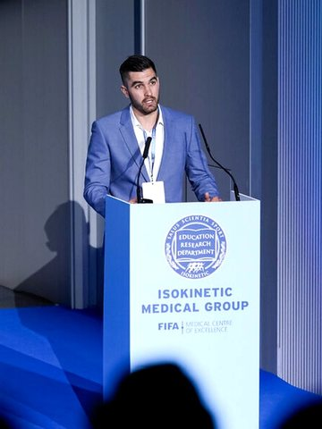
Head of Sport Science, Atlético de Madrid (2014–2026). Founder. Associate Professor, CEU San Pablo. NSCA CSCS® & CPSS®.
Ponencia plenaria · 10:15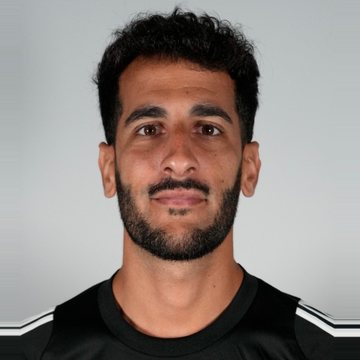
Graduado en Ciencias de la Actividad Física y del Deporte por la Universidad Pablo de Olavide. Máster en Big Data aplicado a la Preparación Física en Fútbol.
Ponencia plenaria · 16:15«De la educación al rendimiento. Construcción integral del deportista»
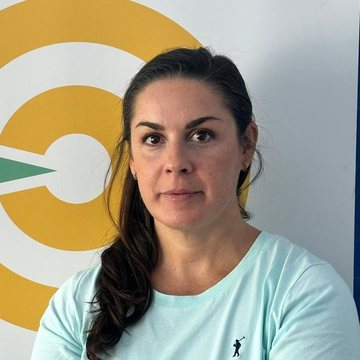
Doctora en Ciencias del Deporte y profesora de la Facultad. Entrenadora de alto rendimiento de deportistas de resistencia.
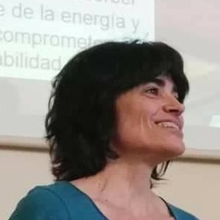
Entrenadora de escalada en roca y competición con más de 25 años de experiencia. Escaladora de élite: grado máximo 8c+.
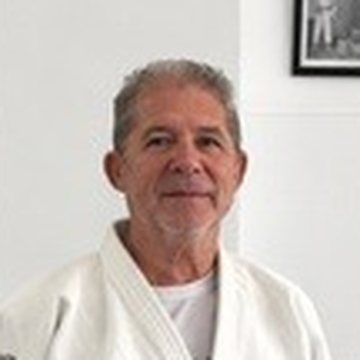
Profesor de Judo y Director de la Escuela Dojo Plasencia. Cinturón rojo y blanco, 6.º Dan.
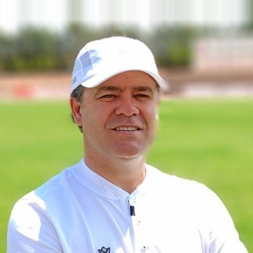
Entrenador Nacional de Atletismo. Entrena a David Barroso, semifinalista en Tokio 2025 y 4.º en el Europeo de Birmingham 2026.
 Coordina: D. Iván Ramírez Bravo
Coordina: D. Iván Ramírez Bravo«Innovación y nuevos avances en el entrenamiento en fútbol»
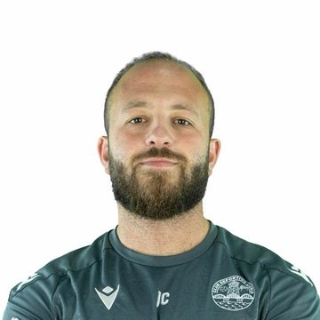
Doctor en Ciencias del Deporte e investigador en la Universidad de Castilla-La Mancha. Ex-Diocesano, ex-Mérida y CD Coria.
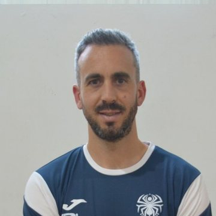
Doctor en Ciencias del Deporte. Exportero y coordinador de la Academia de Porteros TotalKeepers.
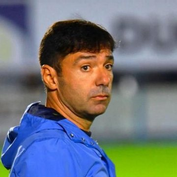
Entrenador del CD Coria, 1.ª RFEF.
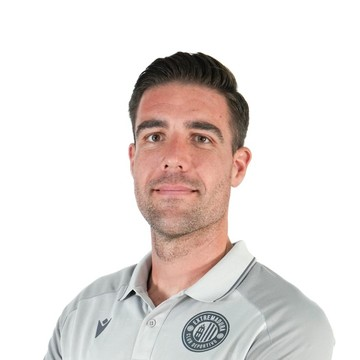
Entrenador con licencia UEFA Pro. Analista táctico en el CD Extremadura y técnico en la Academia Extremadura.
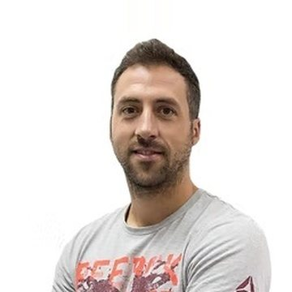
Coordina: D. Juan José Pulido González, Entrenador UEFA ProEl plazo de envío de trabajos ha finalizado. Gracias a todas las personas que habéis enviado vuestra investigación. Estas son las normas con las que se han valorado los trabajos.
Fundamentación teórica sólida, contexto científico y al menos una referencia bibliográfica.
Diseño del estudio, procedimientos y técnicas estadísticas, descritos con claridad y rigor.
Hallazgos concretos fundamentados en datos. No se aceptan afirmaciones genéricas sin evidencia.
Interpretación coherente y académica de los principales hallazgos.
Para autores con trabajo aceptado: descarga la plantilla de la modalidad que se te ha asignado por correo electrónico.
En colaboración con el Albergue Pundak (Cabezuela del Valle). Se entrega en la clausura, a las 18:15.
En colaboración con el Albergue Pundak (Cabezuela del Valle). Se entrega en la clausura, a las 18:15.
Comparte la sobremesa con ponentes, organización y participantes. Plazas con inscripción previa.
Si prefieres comer por tu cuenta, tienes tres cafeterías a pocos pasos de la sede. Pulsa en cada una para verla en el mapa.
Cafetería en la propia sede del simposio. La opción más cómoda.
Cómo llegar →Cafetería en el Campus Universitario (Avenida de las Ciencias).
Cómo llegar →Cafetería en el Campus Universitario (Avenida de las Letras).
Cómo llegar →Universidad de Extremadura · Campus Universitario de Cáceres. Avenida de la Universidad, s/n, 10003 Cáceres.
Las ponencias, mesas y comunicaciones son en el salón de actos; el coffee break y los pósteres, en el hall de la Facultad.
Abrir en Google Maps →Para dudas sobre el programa, la inscripción o el envío de trabajos, escribe al Comité Organizador:
Adfexformacion@gmail.com